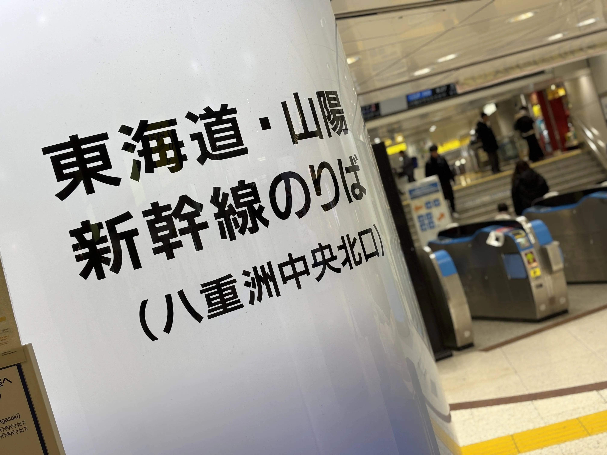
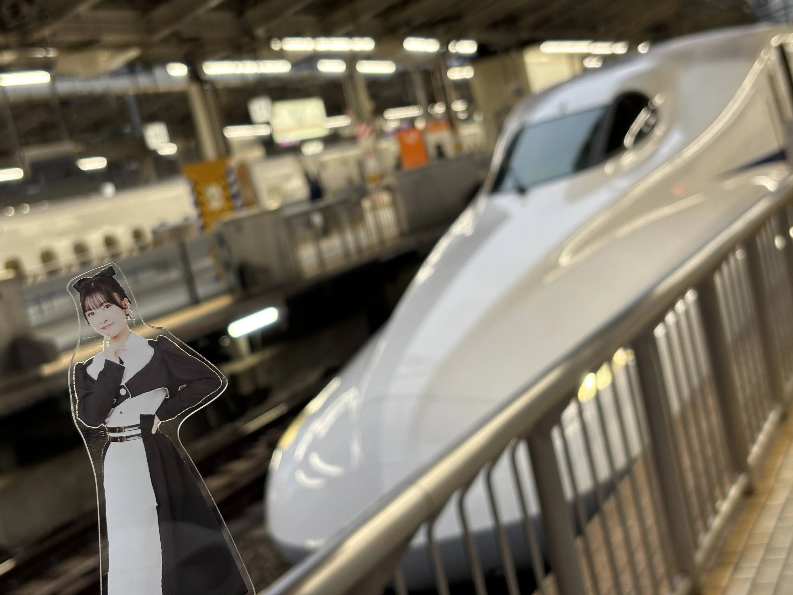
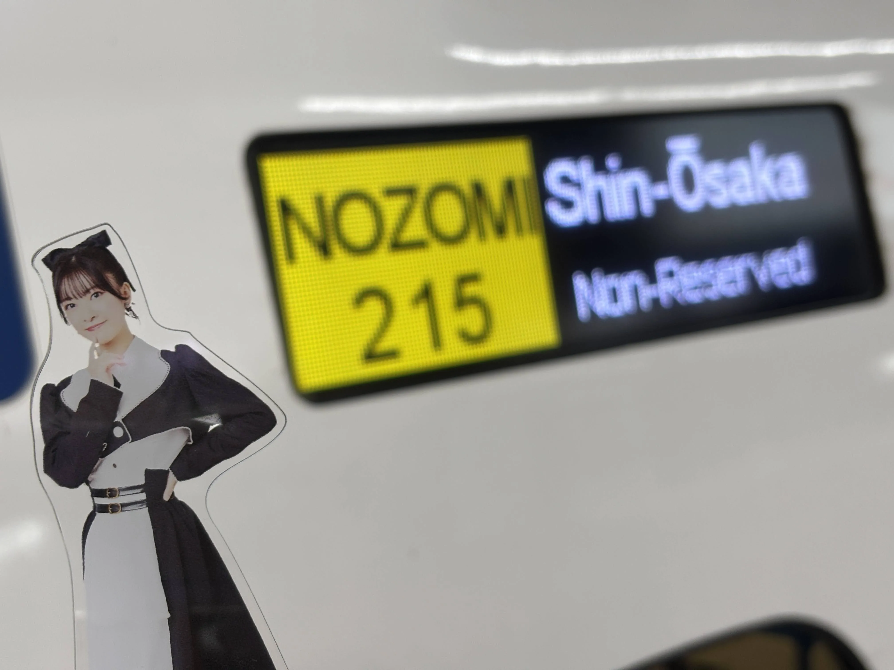
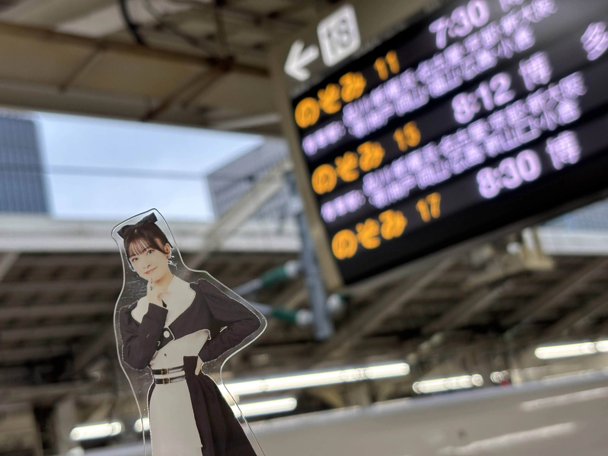
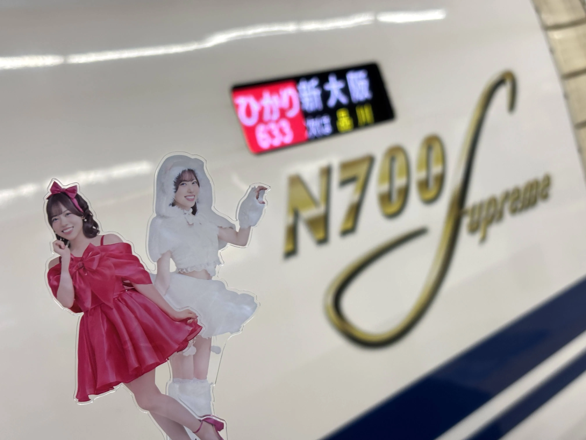
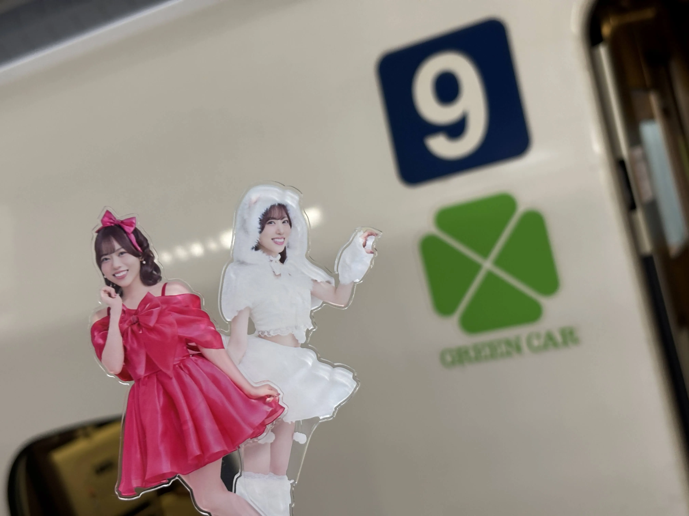
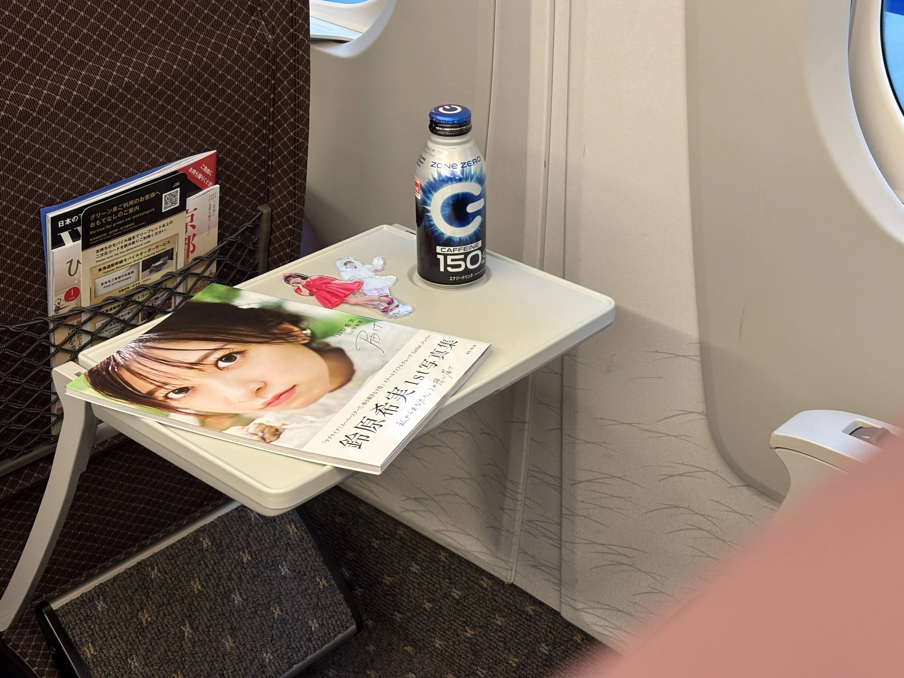
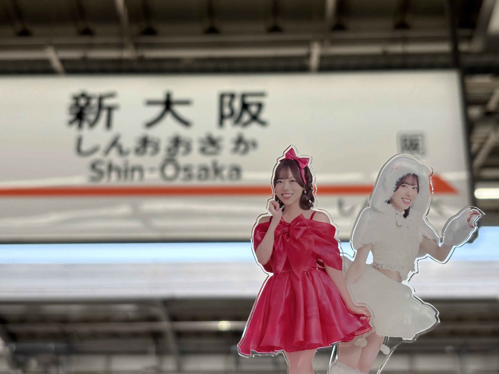
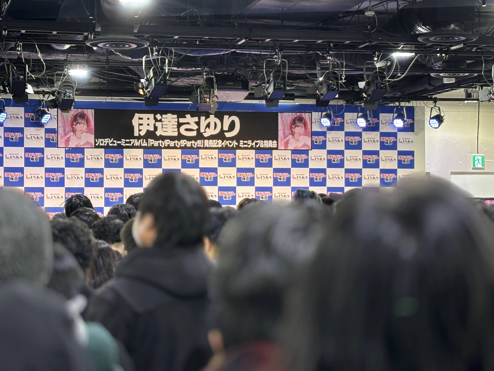
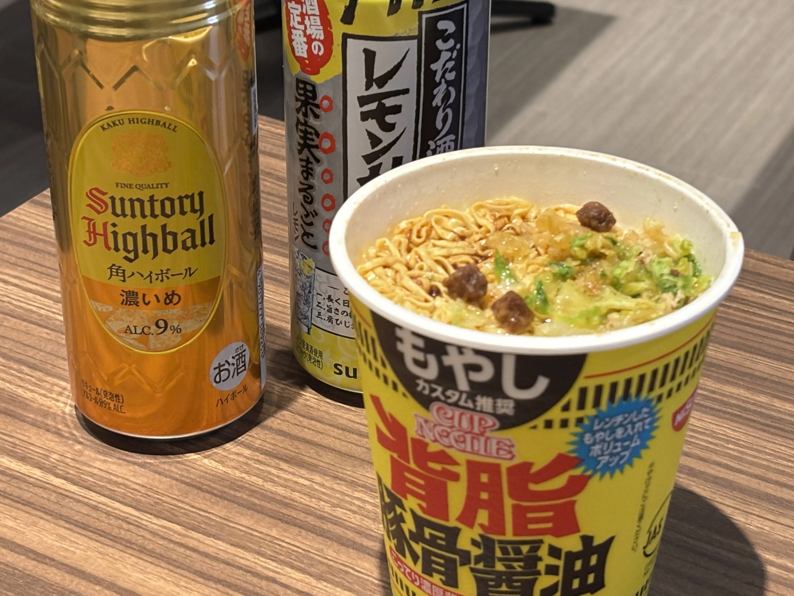

昨日に引き続き伊達さゆりさんのリリースイベントが大阪で開催されるという事で向かいます。
本年初めての新幹線に乗車する為、東京駅へ。
？「ｼｬｰｲｸｿﾞ-!!ﾀｲｶﾞｰ!!ﾌｧｲﾔｰ!!ｻｲﾊﾞｰ!!ﾌｧｲﾊﾞｰ!!ﾀﾞｲﾊﾞｰ!!ﾊﾞｲﾊﾞｰ!!ｼﾞｬｰｼﾞｬｰ!!!」

希実…のぞみだよ。

希実…のぞみだよ…。（のんリザーブド）

希実…のぞみだよ…のぞみ。

今回乗車するのはひかり号。（のぞみ…ゴメンね…）

さゆり…グリーン車だよ…。

のぞみ…さゆり…グリーン車だよ…。

新大阪駅着。10時半頃の到着。結構焦っていたので、足早に会場へ。

会場へ着くと、すでに整列が開始していました。僕の整列番号は120番台。時間の割には、結構前の方を取れたと思います。
今回はヨドバシカメラのポイントが付与されるということで、初回限定盤1枚と通常盤2枚を購入。
もちろんCD購入後にもらった整理番号は、後ろの方の番号でした…苦笑
しかし…！整理番号を受け取り、特典抽選会のくじを引いたところ、なんとB賞が当たりました…！
人生で初めての推しのサインです。名前は本名でお願いしました。
その後、ヲタクとサイゼリヤへ。リハーサルがあるとのことで若干急ぎ目で食べ、再び会場へ戻ることに。
足早に会場へ戻ると、スタッフさんから「整列は1階で行っているので、そちらへ向かってください」と案内されました。
ヲタクを連れてエレベーターで1階へ向かおうと、エレベーターを待っていたところ…なんと！
これからリハーサルを行うであろう僕の推しが歩きながら横に来て、手を振ってくれたではありませんか！
僕は興奮のあまり、推しの名前を呼ぶことしかできませんでしたが、本当に嬉しかったです。（結果的に入り待ちのようになってしまったのは、若干反省していますが…笑）
肝心のライブですが、席（席がない場合は、どう呼べばいいのでしょうか…笑）はかなり後ろの方。
ですが！なぜか推しがとても目線をくれました！満足、感謝…！

イベント終了後にサインを受け取りました。人生初の推しのサイン。一生大切にしようと思います。
ヲタクに呑み会に誘われましたが、明日もあるので一度は宿へ。
こんなに嬉しいことがあったので、結局呑むことにはなったのですがね…笑

推しがとにかく可愛く、サインももらえて、とても良い1日でした。